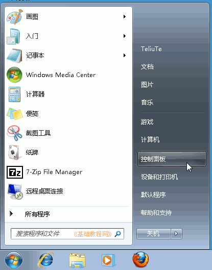
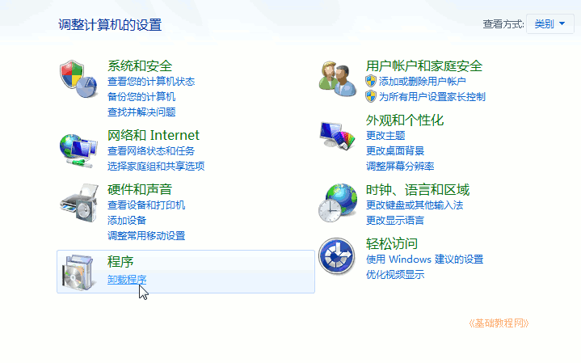
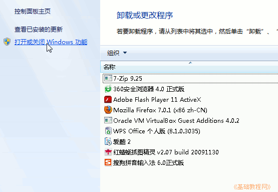
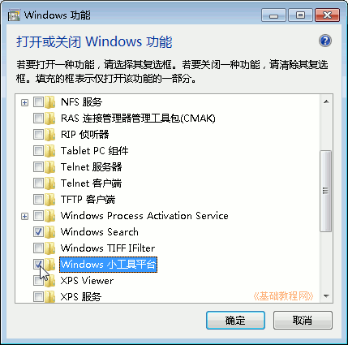
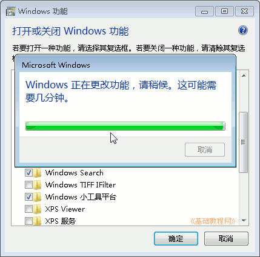
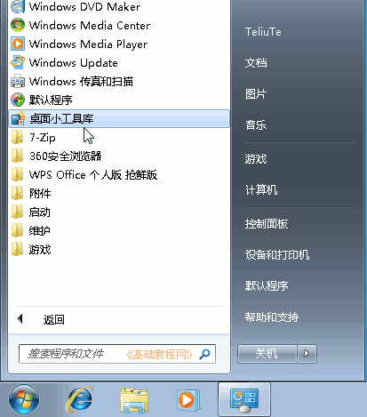
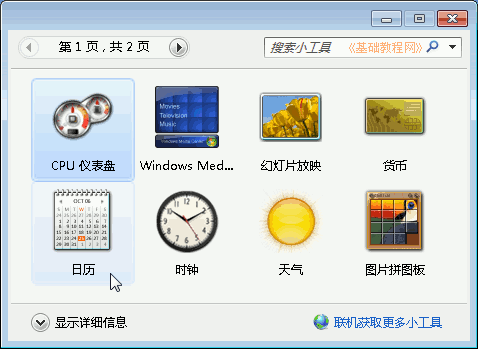
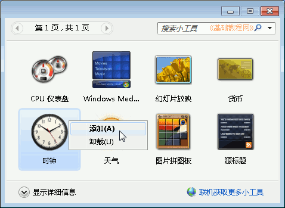
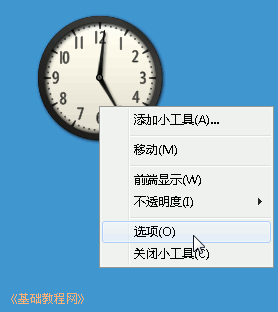

Windows7 基础入门教程
作者：TeliuTe 来源：基础教程网
三十二、桌面小工具 返回目录 下一课我们可以在桌面上放一些小面板修饰桌面；
1、桌面小工具
1）首先添加工具库，点开始按钮进入“控制面板－程序功能”；

2）在出来的面板左侧，找到“打开或关闭 Windows 功能”，点击打开；

3）在出来的面板中，找到“Windows 小工具平台”，打勾选中点“确定”；

4）出来一个进度条，耐心等待，然后完成自动关闭；

5）回到桌面，点“开始－所有程序－桌面小工具库”，打开窗口；

6）出来的面板中有许多小工具，左上边还有翻页按钮；

7）选中日历或时钟，瞄准点右键选“添加”菜单；

8）桌面右侧就会出来相应的小面板；
9）瞄准面板点右键，在出来的菜单中点“选项”可以进行设置，点“关闭小工具”可以关闭；

本节学习了桌面小工具的基础知识，如果你成功地完成了练习，请继续学习；
本教程由86团学校TeliuTe制作|著作权所有
基础教程网：>http://teliute.org/
美丽的校园……
转载和引用本站内容，请保留版权信息和本站链接。